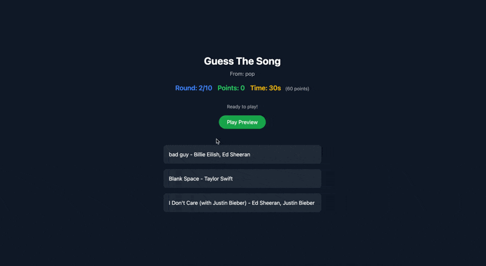
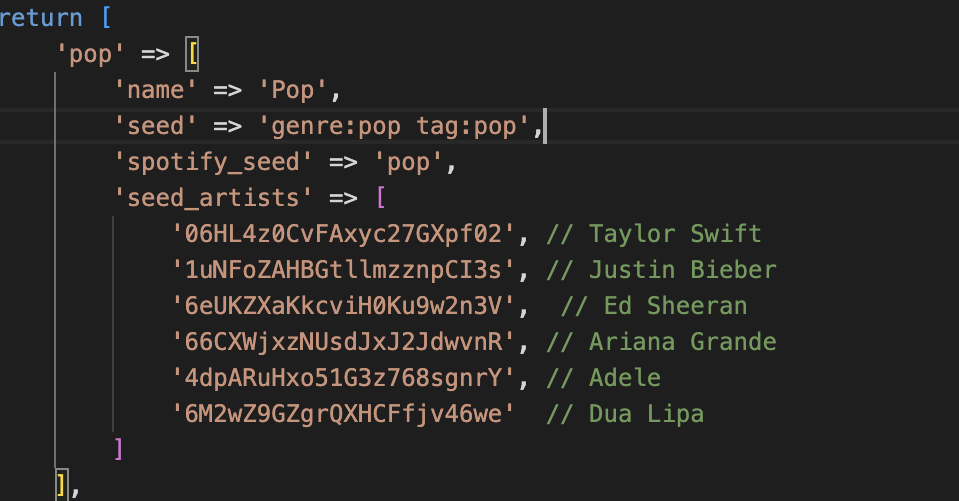

This is a song guessing game I made to improve my skills in Laravel & Tailwind. I used the Spotify API to get the songs. The game is a single page application where the user can guess the song by hearing a part of the song.
During the development of my portfolio I thought that my portfolio's project page looks boring, and I wanted to spice it up more. So, I concepted an idea to make the page more appealing. I wanted to do this by making a game where the projects are shown in a carrousel that moves. When the user clicks on a project. A fisherman will cast his rod and catch the project. When the project is caught the user will be redirected to that project page.
During the Career Day at Fontys I approached a company called INDICIA. This company specializes in making websites using Laravel. When I approached them, I told them more about me and what I want to do in life. I told them that I want to be a full-stack developer. They were also interested. Because I want to work in Laravel I first must learn more about Laravel. That is why I want to make something in Laravel.
For the final idea I want to make a song guessing game. Something like 'Hitster'. Using the Spotify API it is possible to play snippets of songs. The user then can guess the release year, song name & artists name. Based on what the user got right the user will get points. At the end there will be a leaderboard with the top ten users.
If possible, I also want to add web sockets so that multiple users can play the game at one time using their smartphones.
In Figure 1 you can see the MoSCoW list I made. Here you can see all the functions I want to add.
Below you can see everything I did to develop this game.
I started with the authentication. Using the Spotify Developer Dashboard I added a new project to the Spotify Dashboard. In this project I added the Redirect URI and the Client ID. After doing this using the code that spotify gave me I can add a button to my website where the user gets redirected to the Spotify login page. When the user logs in, the user will be redirected back to my website and the user will be logged in. You can see this in Figure 2.
To make the game more repeatable I added eight different genres. This was by far the most difficult to make because the Spotify API is outdated when it comes to getting songs. I first tried to ask for a 30 second preview of all the songs (preview_uri) this did not work so I had to think about a replacement. I found that it was possible to search by genre and then get the first 100 songs of that genre. This kind of worked.
The song guessing part is the most important part of the game. This is where the user can guess the song by hearing a part of the song. The user has three options to pick from one being corrent and 2 being incorrent.
The game is based around 10 different rounds. The user can score points based on how quick the corrent answer is chosen. There is a timer of 30 seconds that counts down to zero. The maximum points per round that can be received is sixty. Every second that passed the points goes down by two. After a choice is selected the user will be redirected to the next song and the points are added to the total points. When the user finished the game and completes the game the user will see how many total points have been earned. You can see this in Figure 3.
To ensure the game was user-friendly and enjoyable, I conducted usability testing with five participants. The testing focused on three main aspects:
The usability testing revealed several insights:
Based on the feedback, I implemented several improvements:
To make the game more fun and clearer I added a visual notification feedback. When the user clicks on a correct answer the user will see a green notification. When the user clicks on an incorrect answer the user will see a red notification. You can see this in Figure 4.
 Figure 4 - Devan JanssenTo improve I looked at different ways of generating the songs for the genres. During the tests I found that some songs are seen multiple times, and the variety of songs was really bad.
I found that I can add artists to the genres meaning when a genre is picked I will make a call to the Spotify API and only ask recognizeable songs from artists that I personally have selected. By doing it in this way songs wont be shown multiple times. In Figure 5 you can see how this works.
 Figure 5 - Devan JanssenUsers indicated they wanted more visual feedback when selecting answers. I implemented this by:
As shown in Figure 4, these visuals now provide immediate feedback to users about their choices.
The initial testing revealed issues with song variety and repetition. I addressed this by:
The improved system, as seen in Figure 5, now provides a more diverse song selection.
After implementing these improvements, I validated the changes with the original users their feedback was.
These improvements directly addressed the key issues identified in user testing, resulting in a more polished and user-friendly game.
However there was one last big problem. Right now when the artists are selected the API call asks for all kinds of songs from specific artists. This means that some songs are not part of the genre. This is a problem because the user will not be able to guess the song.
Based on the current state of the project and user feedback, I have identified several key areas for future improvement:
These improvements will focus on making the game more engaging, social, and user-friendly while addressing the current limitations in song selection and gameplay variety.